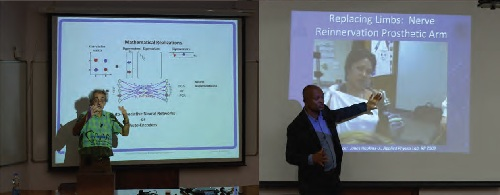
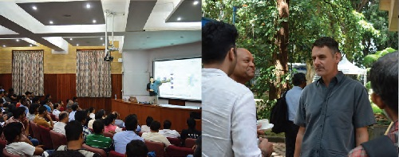
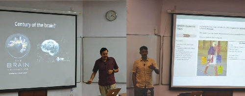
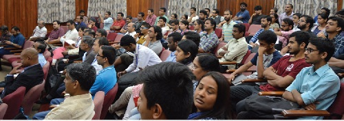
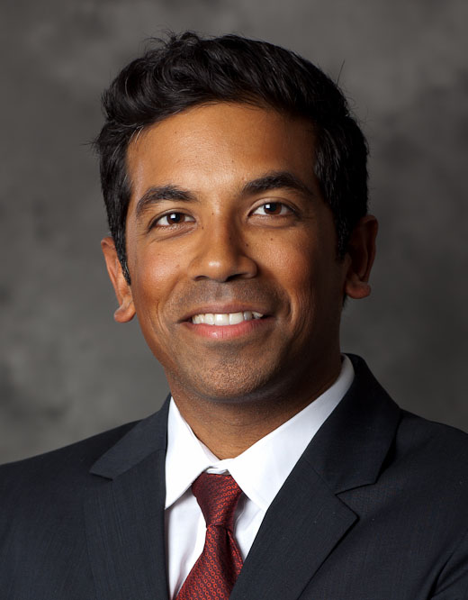

[+] First Workshop on Brain Computation (January 9-13, 2017)
First Workshop on Brain, Computation, and Learning
Organizing Committee:
S.P. Arun, Arnab Bhattacharyya, Rishikesh Narayanan, P.S. Sastry, Chandra Sekhar Seelamantula, Shihab Shamma, Partha Talukdar
Number of participants: 250Invited Speakers:
Upinder S. Bhalla, NCBS
Hynek Hermansky, Johns Hopkins
Vasant Honavar, PennState
Stephane Mallat, Ecole Polytechnic
Jawahar C. V, IIIT Hyderbad
Patrick Kanold, Univ. of Maryland
Nima Mesgarani, Columbia University
Pratik Mutha, IIT Gandhinagar
Balaraman Ravindran, IIT Madras
Maneesh Sahani, University College London
Christoph Schreiner, UCSF Medical Center
Shihab Shamma, Univ. of Maryland
S.P. Arun, IISc, Bengaluru
R. Venkatesh Babu, IISc, Bengaluru
Arnab Bhattacharyya, IISc, Bengaluru
Sridharan Devarajan, IISc, Bengaluru
Ambedkar Dukkipati, IISc, Bengaluru
Rishikesh Narayanan, IISc, Bengaluru
Chandra Sekhar Seelamantula, IISc, Bengaluru
Sujit Kumar Sikdar, IISc, Bengaluru
Partha Pratim Talukdar, IISc, Bengaluru
Summary:
Computational approaches to understanding brain function constitute an important and groeing area of interdisciplinary research. These approaches and associated techniques have acted as melting pot for researchers from disparate disciplines to come together and address one of the grandest challenge of the 21st century, namely, understanding brain function. The grandness challenge and the requirement on diverse forms of expertise has deemed that such endeavors require synergistic interactions among neurobiologists and computer scientists. Over the past decade or two, nuerobiologists have made significant conceptual advances in our understanding of the brain through technical breakthroughs that have yieldded unprecedented oppurtunities to gather large-scale structural and functional data. On the other hand, over the same period, computer scientists have developed exceptional tools to address questions in machine learning and data analyctics, tools that are not only helpful in emulating brain function, but also are radically transforming many applications in information and communication technologies.
To benefit from such synergistic interactions among neurobiologists and computer scientists and educating research of each area with relevant topics and concept of the other. The workshop had talks and tutorials from prominent researchers from all over the world.
About two hundred students (selected from over 400 applicants) from all over India attended the workshop. In addition, about twenty faculty members from different institutions in India also participated in the workshop. Due to the generous funding from Pratiksha trust, all the participants were provided with free accommodation and some minimal support towards travel. The workshop provided an oppurtunity for young researchers to understand the diverse themes of brain research and to appreciate the close relationships that are developing between neuroscience and computer science. From the feedback recieved from the participants, most of them felt that they benefitted a lot from the workshop. Many particpants requested IISC to conduct these workshops every year.
[+] Symposium on Neuromorphic Cognitive Computing (October 4, 2017)
Symposium on Neuromorphic Cognitive Computing
Number of Participants: 202Speakers
Shihab Shamma, Univ. of Maryland on "Neural networks and the representation of categories in the brain"
Sridharan Devarajan, IISc, Bengaluru on "Neuromorphic models of brain oscillations"
S.P. Arun, IISc, Bengaluru on "Cracking the code for visual objects"
Andre van Schaik, Western Sydney Univ. on "Neuromorphic event-based image processing"
Raghavendra Singh, IBM on "Cognition and computation"
Ralph Etienne-Cummings, The Johns Hopkins University on "I, Robot: Blurring the lines between mind, body and robotics"
Summary of the Symposium:
The Pratiksha Trust hosted a one-day"Neuromorphic Cognitive Computing Symposium" at IISc,Bengaluru. The purpose of this symposium was to promote an interactive discussion and knowledge of the latest research in the field of neuromorphic computing. Neuromorphic computing is an interdisciplinary research domain that draws inspiration from multiple disciplines such as biology, engineering, and mathematics. The objective of the workshop was to bring people from such multiple disciplines on a single platform and discuss potential research and collaborations in this exciting area. Participation in the workshop was overwhelming;202 people from various research backgrounds, including participants from industry, attended the workshop. The symposium provided an oppurtunity to discuss key initiatives taken by The Pratiksha Trust to support research in IISc to promote neuromorphic engineering in India. The demo session at the symposium was enormously successful, as participants directly interacted with several neuromorphic systems and were amazed to see how these systems outperform the conventional technology. Neuromorphic camera and real-time cochlea model are some examples of the neuromorphic systems that were demonstrated.
The symposium featured several interesting talks by world leaders in neuromorphic engineering (Prof. Shihab Shamma, Prof. Andre van Schaik, and Prof.Ralph Etienne-Cummings) and one by a speaker from the industry. These talks covered the breadth of research ranging from neuroscience to engineering. Below is a brief summary of each of the talks:
- "Neural networks and the representation of categories in the brain": Prof.Shihab Shamma from the University of Maryland discussed the principle of temporal coherence, which postulates that a signal is perceived as emitted from a single source only when all of its features are temporally modulated coherently, causing them to bind perceptually.
- "Neuromorphic event-based image processing":Prof.Andre van Schaik from The MARCS Research Institute, Western Sydney University discussed the event-based neuromorphic camera and its applications to 'micro' air vehicles (MAVs). His research provided convincing proof that the asynchronous nature of the neuromorphic camera removes the need for any global timing systems, such as the global shutter used in conventional cameras. As a result, these cameras do not suffer from the motion blur and the saturation effects suffered by conventional cameras.
- "I, Robot:Blurring the lines between mind, body and robotics":Prof.Ralph Etienne-Cummings from The Johns Hopkins University presented an overview of the field of neuromorphic engineering and disussed specific applications. His work showed that future brain-machine interfaces (BMI) will not only be used to infer the host's intentions from brain activities or to rpovide the host with extrinsic information (e.g. sensory feedback), but may provide enhancements and/or replacement of parts of the brain itself. He assert that such BMI devices will not be truly realized until the electronics "speak the same language" as the biological brain. Henace, the complete system must be neuromorphic, implying that it must replace the form and function of the brain.
- "Cognition and computation":This talk, presented by Dr. Raghavendra Singh from IBM Inc. India, focused on building computational models to enable cognition in mahines. He discussed the biological plausibility pf current deep learning models, implimentation of such models on low power neuromorphic chips, and their application to the enticing world of fashion.
- "Robust working memory through gamma oscillations":Dr.Sridharan Devarajan from the Indian Institute of Science, Bengaluru, described an in-silico model network of excitatory and inhibitory neurons that seeks to emulate robust maintenance of information in working memory. Due to the wide heterogeneity in the firing propeties of in-silico neurons, persistent activity within this network does not remain stable but rather drifts to the local neighbourhood of the most excitable neurons. He demonstrated how inducing synchronous gamma-band oscillations within this network transiently homogenizes the firing properties of neurons, thereby enabling the robust and stable maintenance of persistent activity within this network.
- "Cracking the code for visual objects":Dr.S P Arun from the Indian Institute of Science, Bengaluru, presented recent findings from his lab elucidating the code for visual objects using both behavioral experiments in humans and single neuron recordings from monkeys. This code operates according to systematic rules, incorporates knowledge abouth the world, enable simple decoding of relevant information and is systematically different from most computer vision algorithms.
- Demo and posters: This session was the most successful part of the event. Various labs from IISc presented demos and posters covering the broad range of topics from neuroscience to electronics engineering.
Images of Symposium:
   
[+] Compact Course (December 2017)
Compact Course on MRI Physics

Professor Krishna Nayak
University of Southern California, USA
Krishna Nayak is a Professor of Electrical Engineering in the University of Southern California, USA, with joint appointments in Radiology and Biomedical Engineering. Prof. Nayak received a PhD in Electrical Engineering from Stanford University in 2001. His research expertise and interests are in Magnetic Resonance Imaging; MRI pulse sequence design; MRI reconstruction; MRI artifact correction; Real-time imaging; Application of MRI to the assessment of cardiovascular disease and obesity; Signal and image processing. He directs the Magnetic Resonance Engineering Laboratory whose research mission is to develop and clinically translate novel magnetic resonance imaging (MRI) technology.
Prof.Krishna Nayak visited IISc from Nov 21 - Dec 25, 2017. He delivered 5 reserach seminars on Real-Time MRI and related topics at IISc and to Bengaluru-area professional interest groups. He also taught a weeklong short-course on MRI Physics that was attended by about 45 faculty and students. He had interacions with Prof.Phaneendra Yalavarty(CDS) and his group, and also met with several other faculty including Prof.Prasanta Ghosh(EE), Partha Talukdar (CDS), PS Sastry(EE), Anil Kumar (NMR center), and Sridharan Devarajan(CNS).
Summary of the Course on MRI Physics:
The course covered the basics of MR Physics and MR image reconstruction with a hands-on homework session following each module. The homework sessions utilised MATLAB and each participant carried a laptop to complete the hand-on part. The course was designed for early reserachers (graduate students, post-docs, and faculty members) to comprehensively understand the MR imaging from a signal/image processing perspective. It was open (free of cost) to the acdemic community. Specific topics included: Physics, Signal equation, 2D/3D imaging;Sampling considerations, contrast, noise, etc; Discrete object approximation, Parallel imaging; Model-based reconstruction, Physics-based constraints.
The course attended by over 45 participants from IISc(CDS, CNS, EE, ECE, and NMR), NIMHANS, IIIT, Bengaluru, and IIT-Tirupati. The course was well recieved by all participant and added much needed signal processing prospective to Magnetic Resonance Image formation. More details about the course and related course material can be found here: MR Imaging.
[+] BCL 2018
Activities Planned for 2018:
Second Workshop on Brain, Computation, and Learning, IISc, Bengaluru (January 8-12, 2018)
IISc-University College of London (UCL) Joint Workshop on Brain, Computation, and Data Science in UCL, London (May 2018)(supported by UCL)
This is initated by Prof. Maneesh Sahani from UCL, LondonBroadcom Workshop on Brain Inspired/Neuromorphic Computing(May 2018)
This event will be funded by Broadcom as a part of their CSR initiativeOrganization of Compact Cources
Summer School for graduate Students
Organization of Brainstorming Workshops
Recruitment of Post-Doctoral Fellows
Exchange of graduate students visitors between IISc and other universities
- The objective of all of the above activities will be to evolve and launch ambitious collaborative projects in frontier topics in brain, computation and data science.